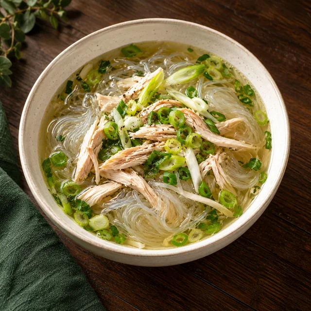
Restaurace ASIA · Volary
Jídelní lístek
Asijská a vietnamská kuchyně. Všechny ceny v Kč.
U každého jídla najdete fotografii pro snazší výběr. Snímky označené „Ilustrační foto“ jsou vytvořené pomocí AI; skutečné servírování se může lišit. U jídel s více variantami je vyobrazená varianta uvedena u fotografie.
Polévky
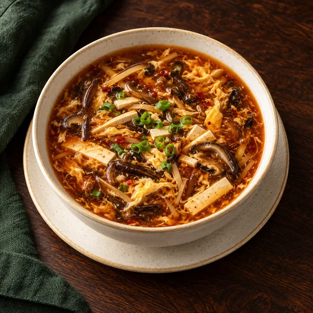
2. Pekingská polévka
55 KčSúp Bắc Kinh150 ml · Alergeny: 1, 3
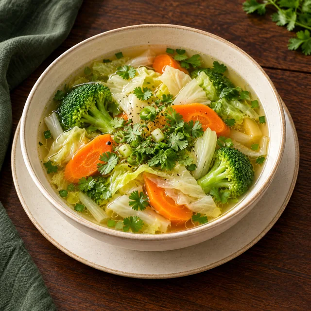
3. Zeleninová polévka
45 KčSúp rau150 ml
Předkrmy
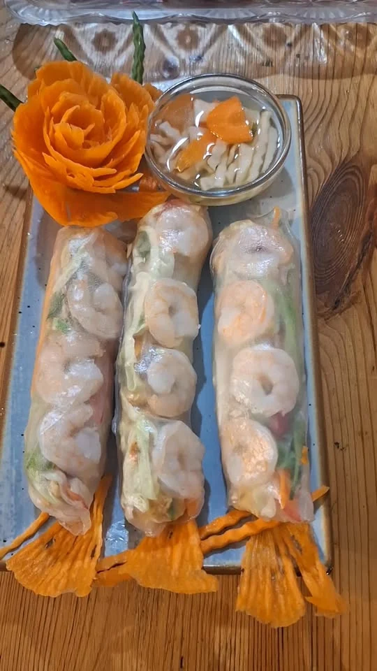
4. Čerstvé jarní závitky
90 KčGỏi cuốn2 ks · Alergeny: 2, 3
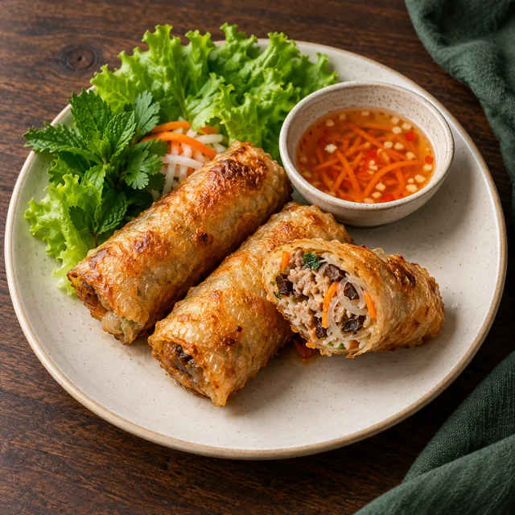
5. Smažené závitky
105 KčNem rán3 ks · Alergeny: 1, 3
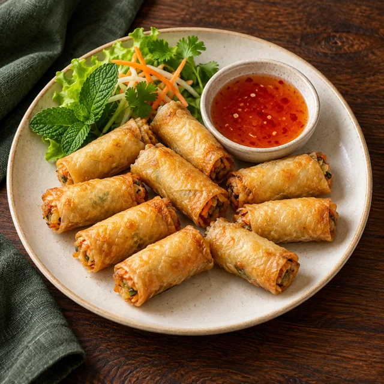
6. Mini veganské závitky
100 KčNem chay mini10 ks · Alergeny: 1, 3
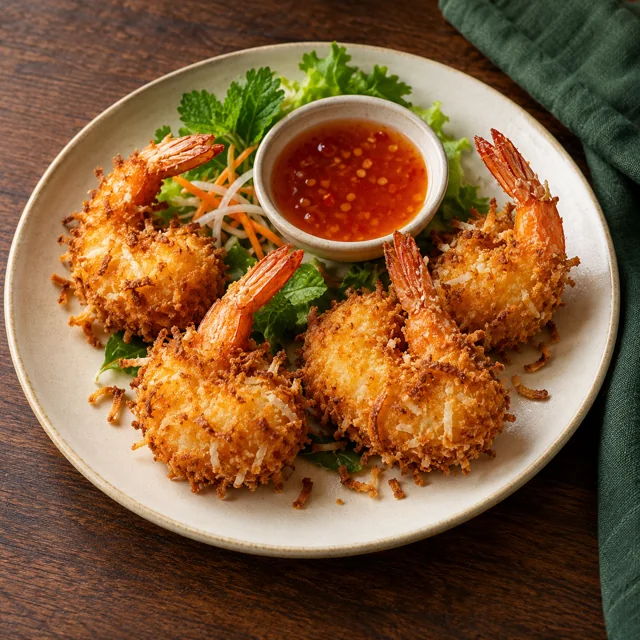
7. Smažené krevety obalované kokosovou strouhankou
115 KčTôm chiên xù dừa5 ks · Alergeny: 1, 2, 3
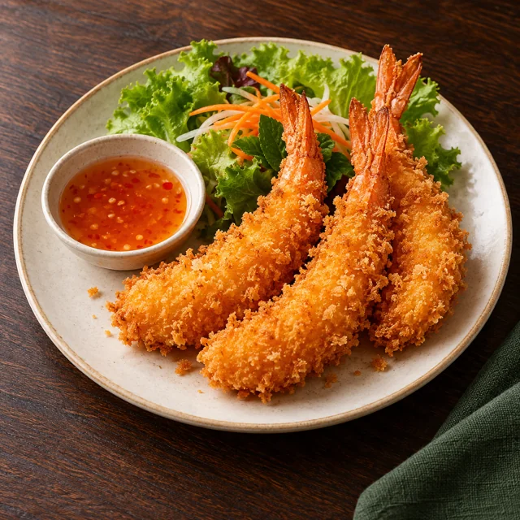
8. Smažené obalované krevety
135 KčTôm chiên xù3 ks · Alergeny: 1, 2, 3
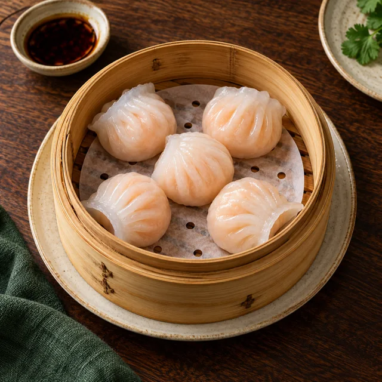
9. Krevetové knedlíčky
115 KčHá cảo tôm5 ks · Alergeny: 2
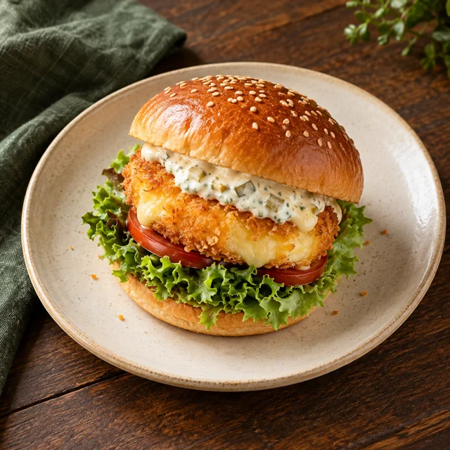
10. Hamburger se smaženým sýrem
120 KčHamburger phô mai chiên120 g · Alergeny: 1, 3, 7
Saláty
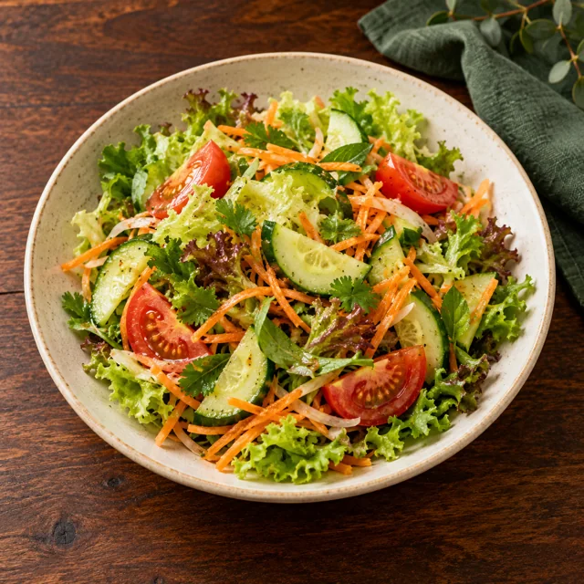
11. Míchaný salát
75 KčSalad trộn130 g
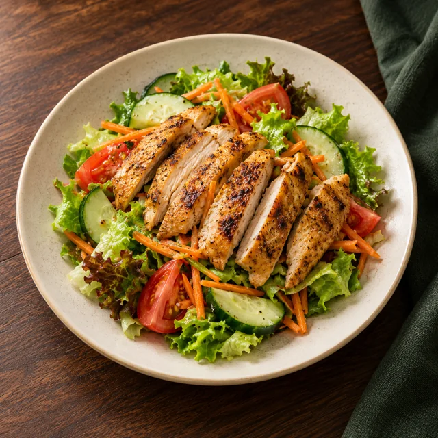
12. Kuřecí salát
125 KčSalad gà130 g
Hlavní jídla
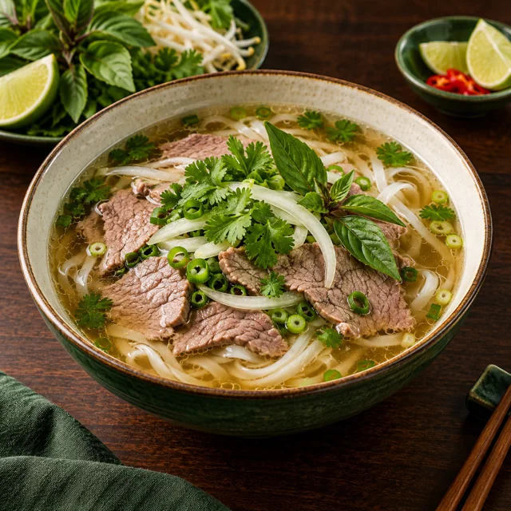
13. Nudlová polévka Pho / Bun
Phở / Bún nước350 ml
- Kuřecí maso185 Kč
- Hovězí maso185 Kč
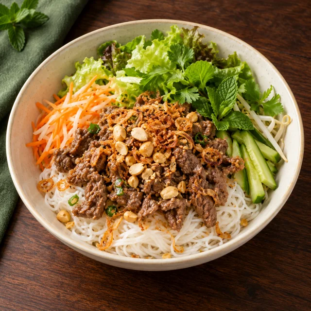
14. Bun Nam Bo
Bún Nam Bộ250 g · Alergeny: 5
- Hovězí maso185 Kč
- Tofu · Alergeny: 6185 Kč
- Smažené závitky · Alergeny: 1, 3185 Kč
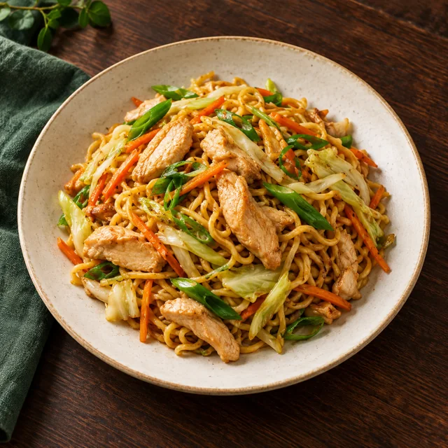
15. Smažené nudle
Mì xào250 g · Alergeny: 1, 3, 6
- Kuřecí maso150 Kč
- Vepřové maso160 Kč
- Hovězí maso175 Kč
- Krevety · Alergeny: 2180 Kč
- Kachní maso245 Kč
- Tofu · Alergeny: 6150 Kč
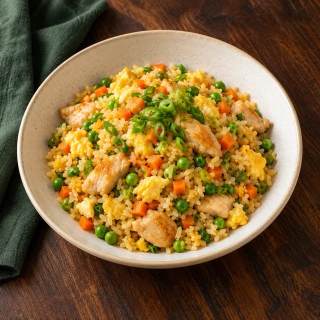
16. Smažená rýže
Cơm chiên250 g · Alergeny: 1, 3
- Kuřecí maso155 Kč
- Vepřové maso165 Kč
- Hovězí maso175 Kč
- Krevety · Alergeny: 2190 Kč
- Kachní maso245 Kč
- Tofu · Alergeny: 6155 Kč
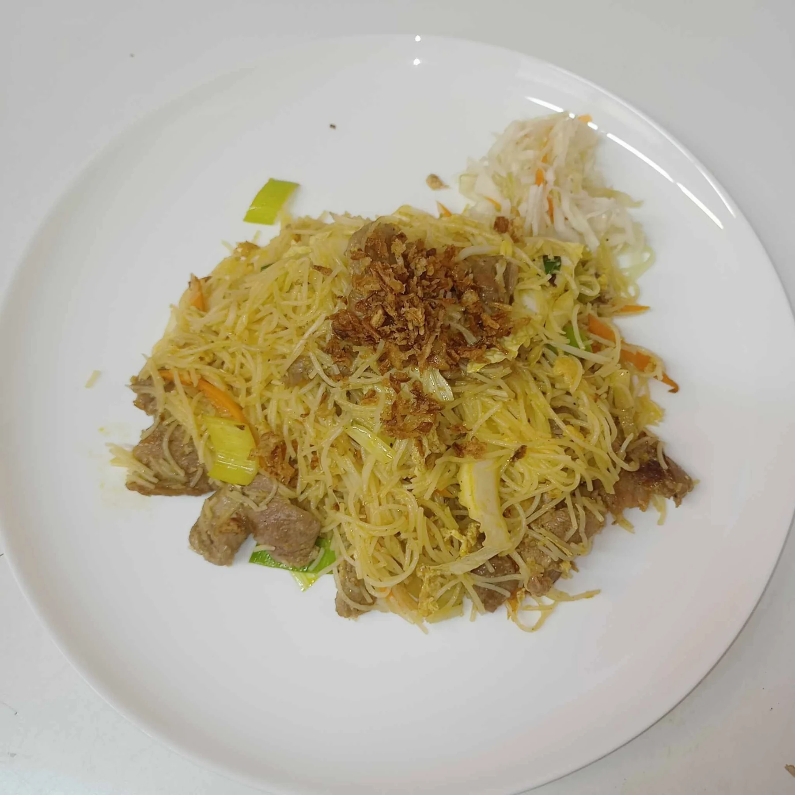
17. Smažené rýžové nudle
Bún xào250 g · Alergeny: 3
- Kuřecí maso165 Kč
- Vepřové maso175 Kč
- Hovězí maso185 Kč
- Krevety · Alergeny: 2190 Kč
- Kachní maso245 Kč
- Tofu · Alergeny: 6165 Kč
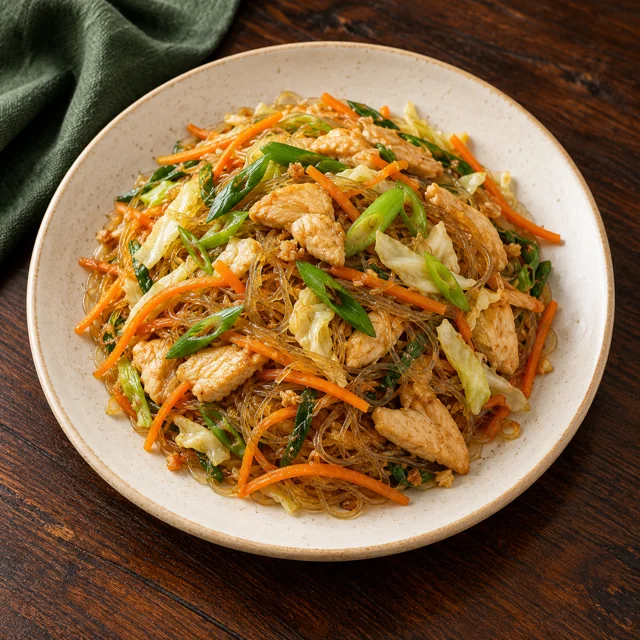
18. Smažené skleněné nudle
Miến xào250 g · Alergeny: 3
- Kuřecí maso165 Kč
- Vepřové maso179 Kč
- Hovězí maso185 Kč
- Krevety · Alergeny: 2190 Kč
- Kachní maso245 Kč
- Tofu · Alergeny: 6165 Kč
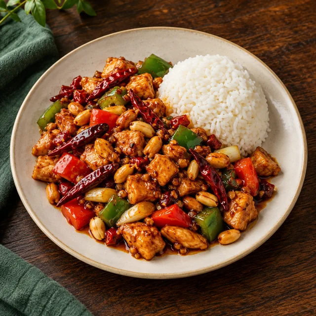
19. Kung Pao s rýží
Kung Pao với cơm250 g · Alergeny: 1, 5, 6
- Kuřecí maso175 Kč
- Vepřové maso180 Kč
- Hovězí maso185 Kč
- Krevety · Alergeny: 2190 Kč
- Tofu · Alergeny: 6175 Kč
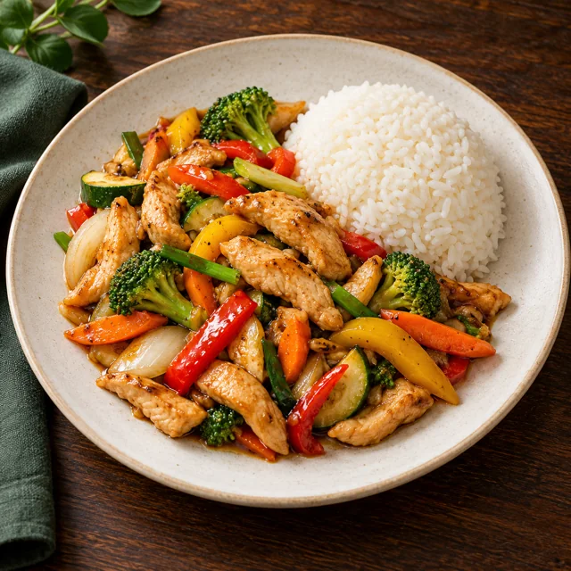
20. Restovaná zelenina s masem a rýží
Rau xào với cơm và thịt250 g · Alergeny: 6
- Kuřecí maso170 Kč
- Vepřové maso185 Kč
- Hovězí maso185 Kč
- Krevety · Alergeny: 2185 Kč
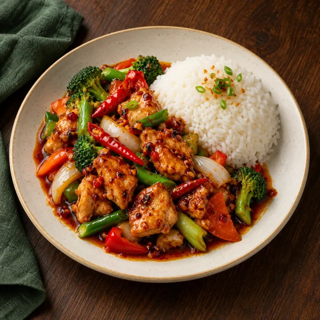
21. Pikantní se zeleninou a rýží
Món cay với rau và cơm250 g
- Kuřecí masoCena na dotaz
- Vepřové masoCena na dotaz
- Hovězí masoCena na dotaz
- Krevety · Alergeny: 2Cena na dotaz
- Kachní masoCena na dotaz
- Tofu · Alergeny: 6Cena na dotaz
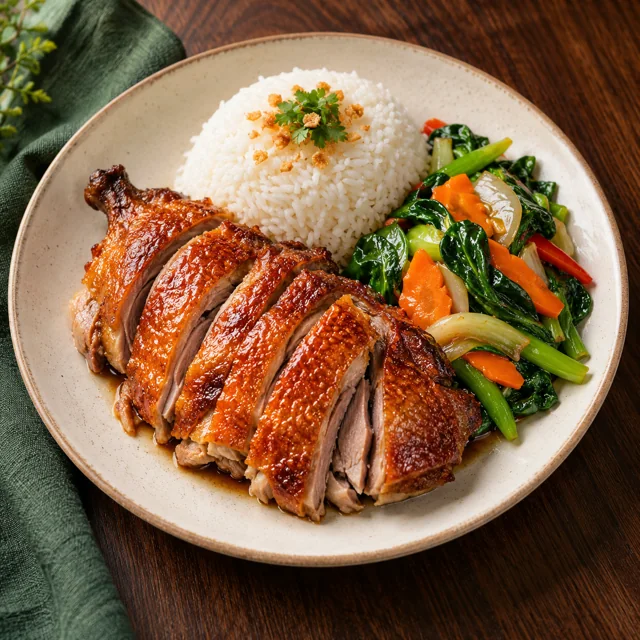
22. Křupavá kachna se zeleninou a rýží
Cena na dotazVịt chiên giòn với rau và cơm250 g · Alergeny: 1, 6
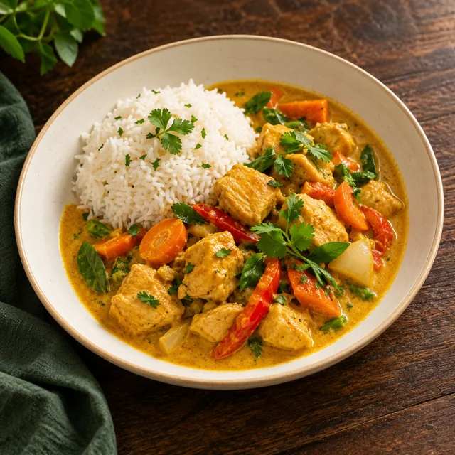
23. Kari se zeleninou a rýží
Cà ri với rau và cơm250 g · Alergeny: 7
- Kuřecí maso175 Kč
- Vepřové maso175 Kč
- Hovězí maso185 Kč
- Krevety · Alergeny: 2190 Kč
- Kachní maso235 Kč
- Tofu · Alergeny: 6175 Kč
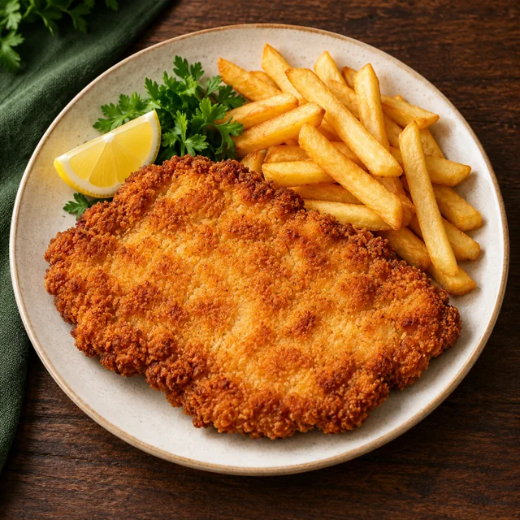
24. Kuřecí řízek s hranolkami
195 KčGà chiên xù với khoai tây chiên250 g · Alergeny: 1, 3
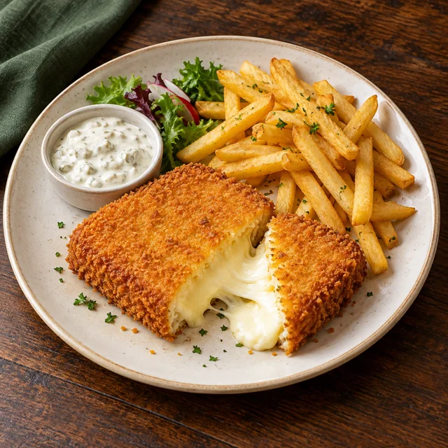
25. Smažený sýr s hranolkami
165 KčPhô mai chiên với khoai tây chiên250 g · Alergeny: 1, 3, 7
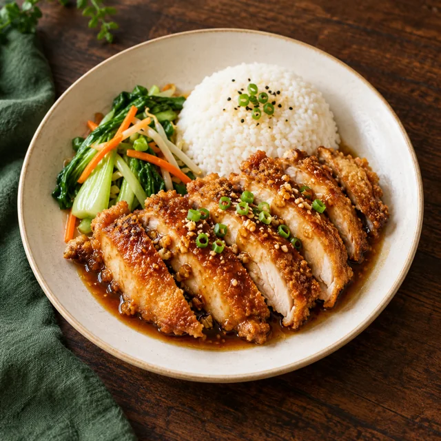
26. Voňavé a křehké kuře s rýží
185 KčGà thơm mềm với cơm250 g · Alergeny: 1, 3, 6
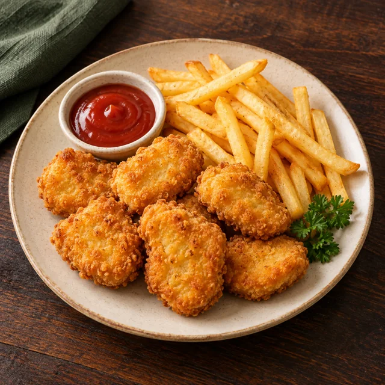
27. Smažené kuřecí kousky s hranolkami
175 KčGà chiên miếng với khoai tây chiên250 g · Alergeny: 1, 3
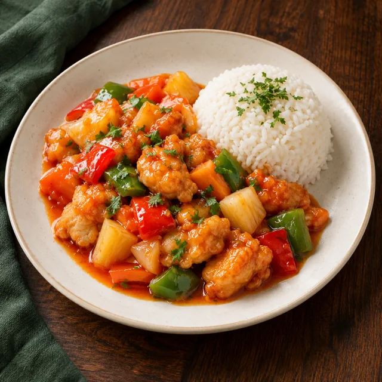
35. Sladkokyselá omáčka se zeleninou a rýží
Sốt chua ngọt với rau và cơm250 g
- Kuřecí maso175 Kč
- Vepřové maso175 Kč
- Hovězí maso185 Kč
- Krevety · Alergeny: 2190 Kč
- Tofu · Alergeny: 6175 Kč
- Smažené kuřecí kousky · Alergeny: 1, 3175 Kč
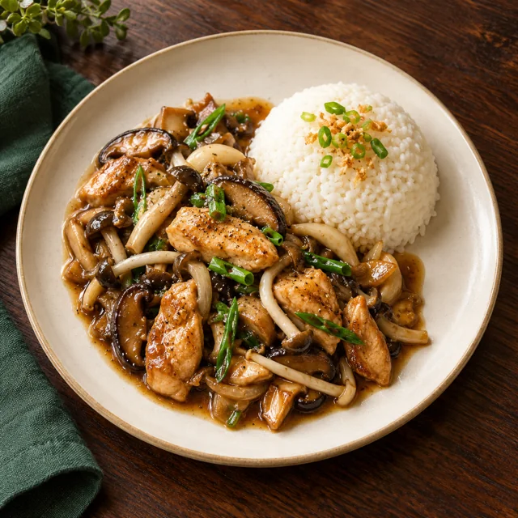
36. Houby s rýží
Nấm và cơm250 g
- Kuřecí maso175 Kč
- Vepřové maso175 Kč
- Hovězí maso185 Kč
- Krevety · Alergeny: 2195 Kč
- Kachní maso245 Kč
- Tofu · Alergeny: 6175 Kč
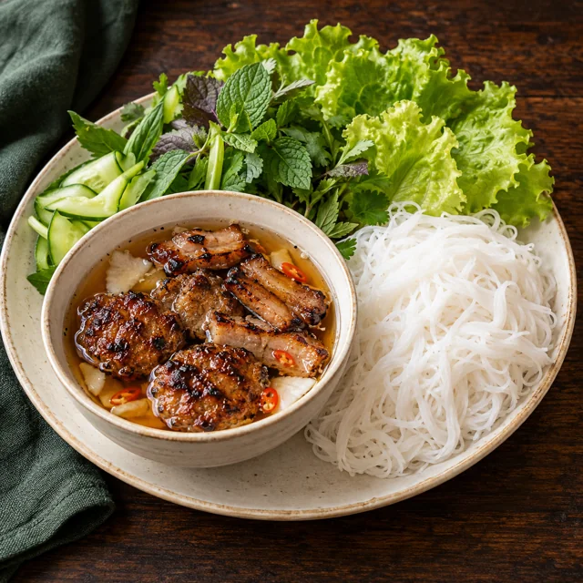
37. Bún chả – grilované vepřové maso s rýžovými nudlemi
189 KčBún chả250 g
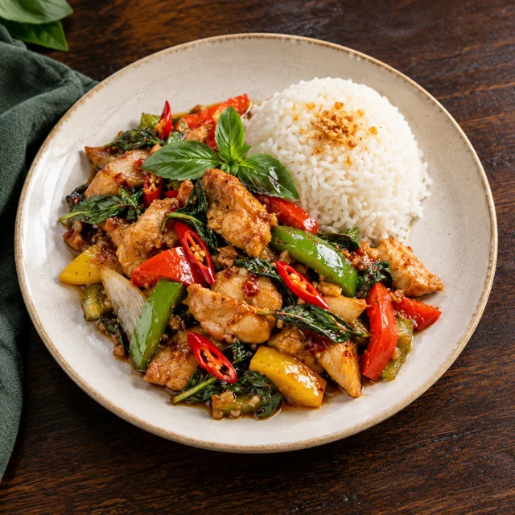
38. Po thajsku se zeleninou a rýží
Món Thái với rau và cơm250 g
- Kuřecí maso179 Kč
- Vepřové maso185 Kč
- Hovězí maso190 Kč
- Krevety · Alergeny: 2195 Kč
- Kachní maso245 Kč
- Tofu · Alergeny: 6179 Kč
Na horké plotýnce / Mini horký hrnec
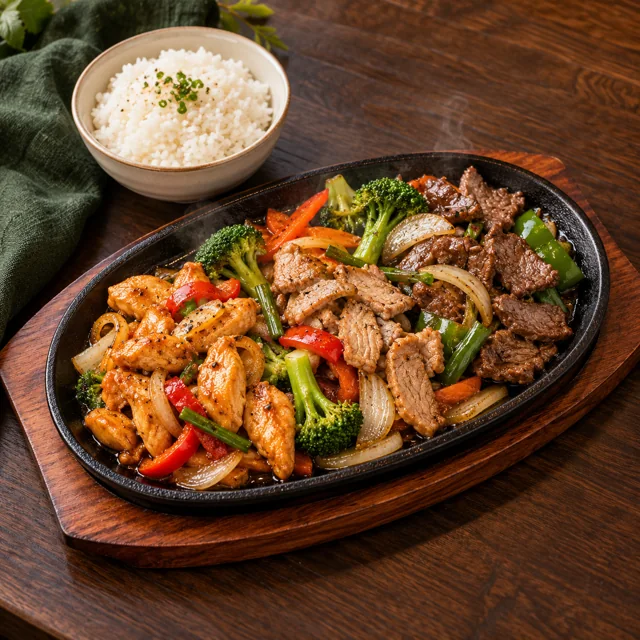
28. 3 druhy masa se zeleninou a rýží
265 KčBa loại thịt với rau và cơm350 g · Alergeny: 6
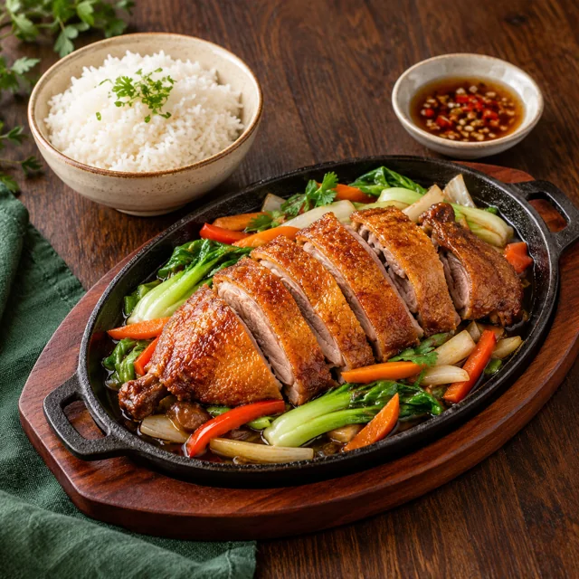
29. Křupavá kachna se zeleninou a rýží
255 KčVịt chiên giòn với rau và cơm350 g · Alergeny: 6
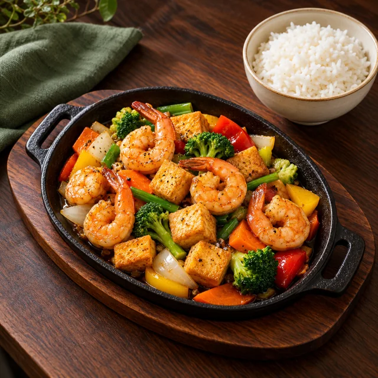
30. Krevety s tofu, zeleninou a rýží
265 KčTôm với đậu phụ, rau và cơm350 g · Alergeny: 2, 6
Vegetariánská jídla
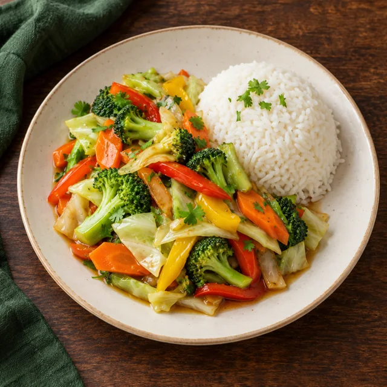
31. Restovaná zelenina s rýží
160 KčRau xào với cơm250 g · Alergeny: 6
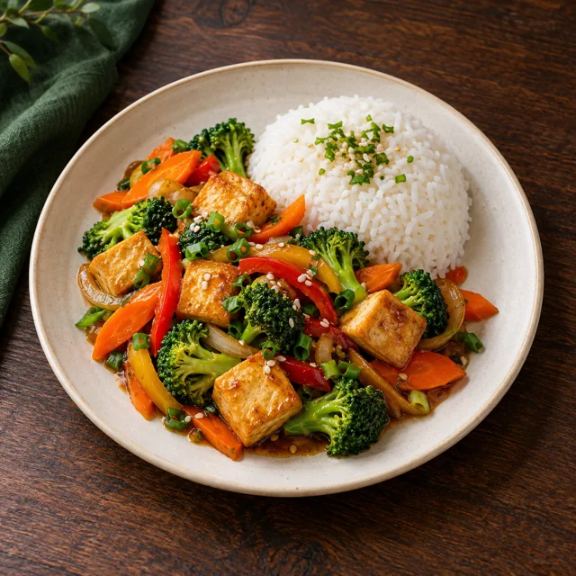
32. Restovaná zelenina s tofu a rýží
175 KčRau xào với đậu phụ và cơm250 g · Alergeny: 6
Dezerty
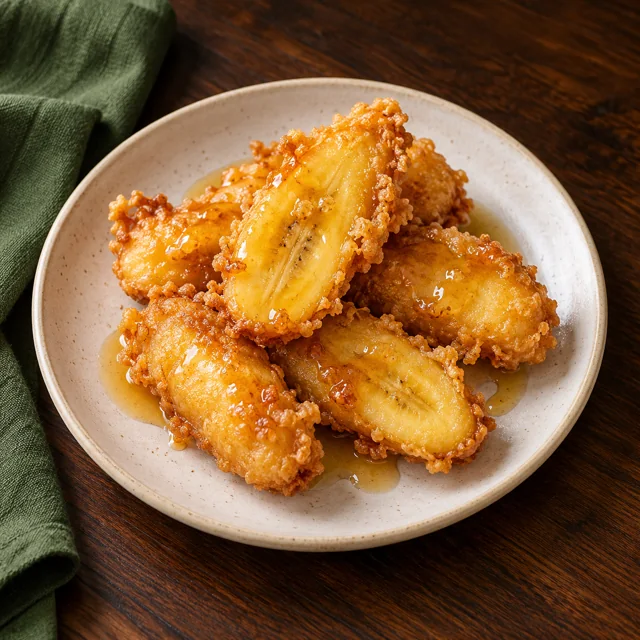
33. Smažený banán
85 KčChuối chiên80 g · Alergeny: 1
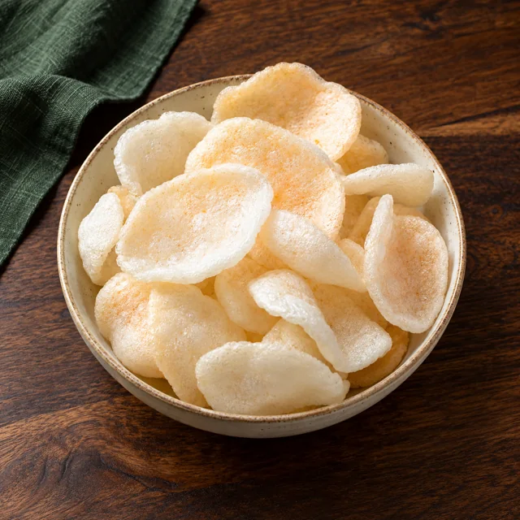
34. Krevetové lupínky
85 KčPhồng tôm50 g · Alergeny: 2
Přílohy
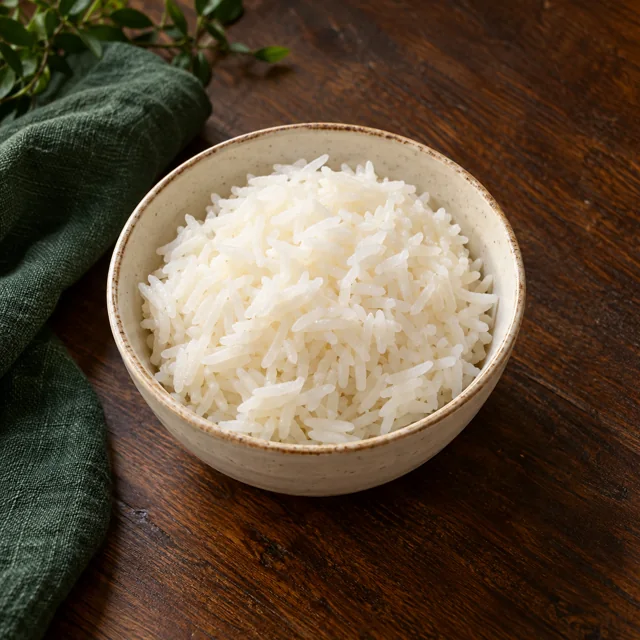
Bílá rýže
45 KčCơm trắng120 g
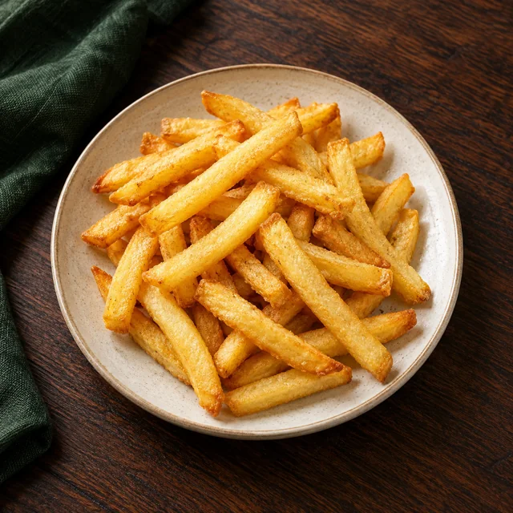
Hranolky
45 KčKhoai tây chiên120 g
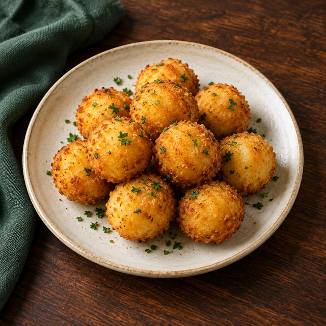
Krokety
50 KčKhoai tây viên chiên120 g
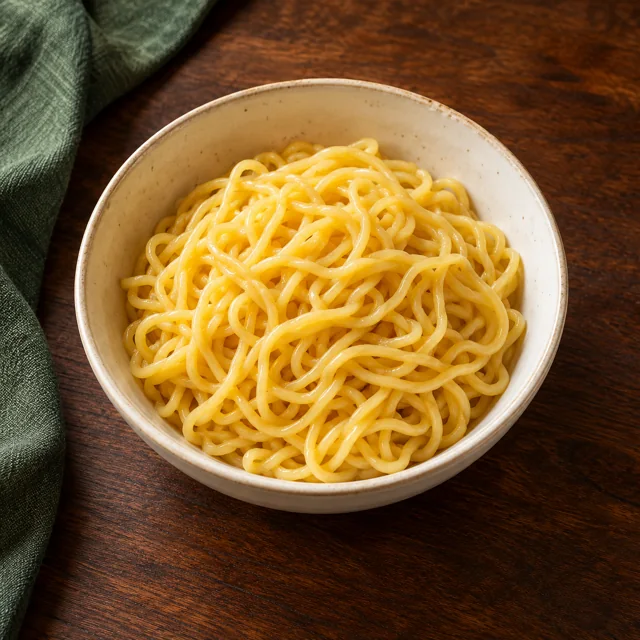
Nudle
65 KčMì120 g · Alergeny: 1
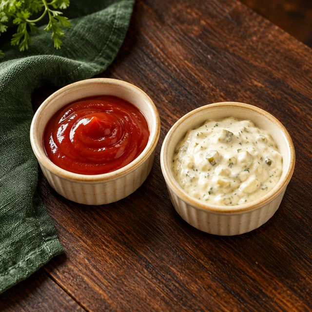
Kečup / Tatarka
18 KčTương cà / Sốt tartar20 g · Alergeny: 3
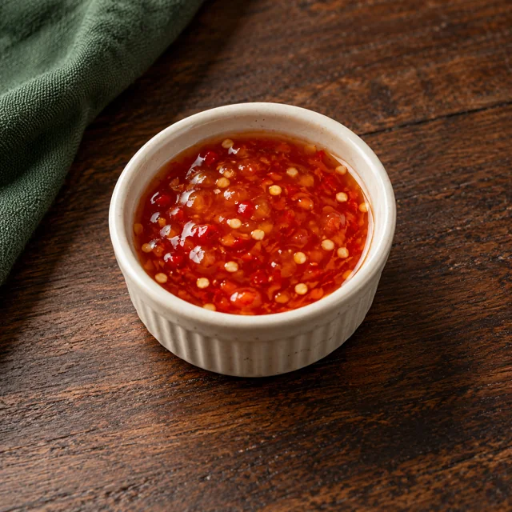
Chili
10 KčTương ớt10 g
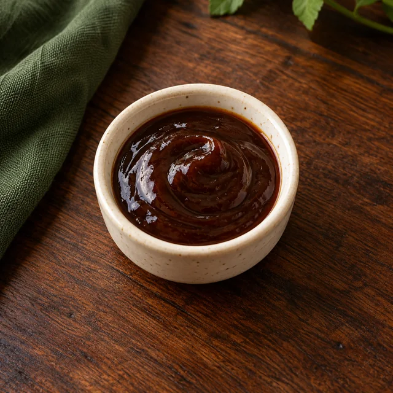
Hoisin omáčka
30 KčTương đen30 g · Alergeny: 6
Seznam alergenů (1–14)
- Obiloviny obsahující lepek
- Korýši
- Vejce
- Ryby
- Podzemnice olejná (arašídy)
- Sójové boby (sója)
- Mléko
- Skořápkové plody
- Celer
- Hořčice
- Sezamová semena
- Oxid siřičitý a siřičitany
- Vlčí bob (lupina)
- Měkkýši
Malá krabice s sebou 8 Kč · Velká krabice s sebou 12 Kč
Alergeny jsou uvedeny podle jídelního lístku restaurace. S dotazy na alergeny se prosím obraťte na obsluhu.
Ceny jídel č. 21 a 22 ověřte telefonicky.